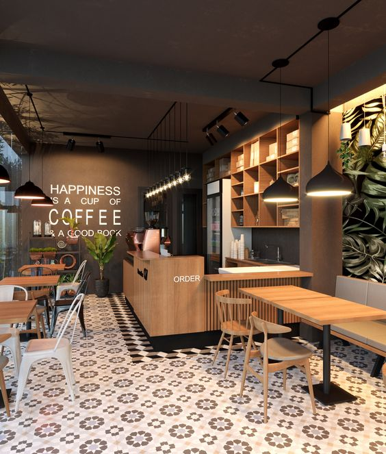

A Cafeteria Cantinho do Café é um espaço acolhedor, em que o cliente possa desfrutar de um bom café enquanto relaxa com os amigos. Servimos os melhores grãos e acompanhamentos.
Rua João Pio Duarte da Silva, 535 - Córrego Grande, Florianópolis, SC
Horário de funcionamento:De Segunda à Sábado:Das 8h às 18h30
E-mail: contato@cantinhodocafe.com.br
Telefone: (48) 1234-5678